Super-Resolution of Single Multi-Color Image with Guided Filter
By: Abdallah Arar
Link to research paper: https://www.sciencedirect.com/science/article/pii/S1047320318303195
Contents
Problem Formulation
Super-resolution algorithms and techniques for monochrome images are being developed rapidly but such for multi-color images are still being explored.
Simply upscaling the chromatic channels of the image using interpolation leads to degradation in image quality, which may have an effect on other algorithms that depend on super-resolution.
Proposed Solution
This solution attempts to alleviate degradation in image quality by using a super-resolution algorithm on the luminance channel and then using it as a guide image for guided filtering of the upscaled chromatic channels. As seen in the block diagram below, the image is represented in the 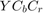 color space, and the chromatic channels, 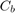 and 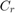, are scaled up using bicubic interpolation and the luminance channel, 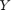, is scaled up using some super-resolution algorithm. Both upscaled chromatic channels are then filtered using a guided filter with the upscaled as the guide, and then the said filtered chromatic components along with the upscaled are then converted back into an RGB image.
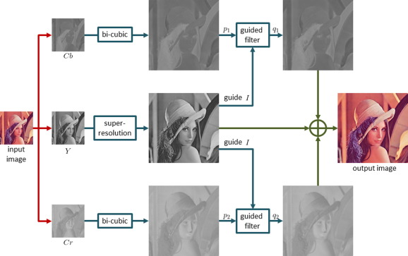
Data Source
For the purposes of illustrating the solution, the standard image of Lena named lena_std.tif obtained from http://www.lenna.org/ will be used.
imshow('lena_std.tif')
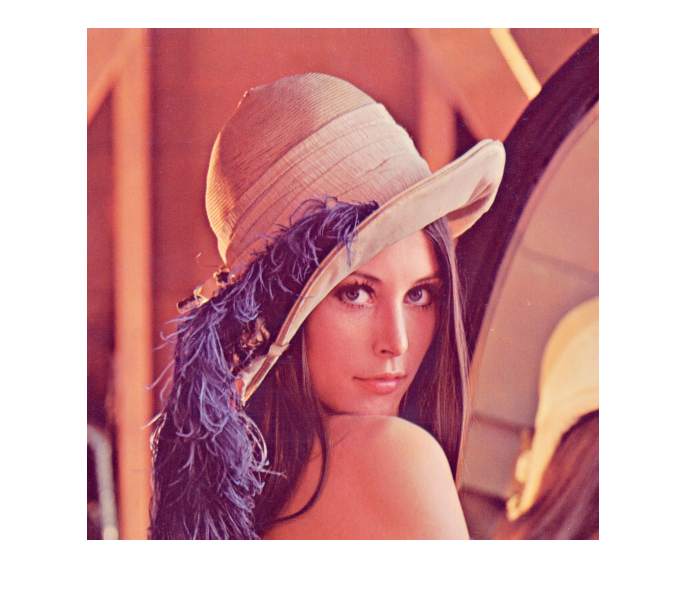 Solution
Parameter set-up
image = 'lena_std.tif';
factor = 2;
r = 2;
e = 0.01;
Import images(s) and normalize them to be in the range of [0,1]
ref = imread(image); ref = double(ref)/256;
Downscale the reference image to be used as the input
A = imresize(ref, 1 / factor, 'bicubic');
Convert the input image from RGB to YCbCr color space
R = A(:, :, 1); G = A(:, :, 2); B = A(:, :, 3); Y = 0.299 * R + 0.587 * G + 0.114 * B; C_b = 0.564 * (B - Y); C_r = 0.713 * (R - Y); subplot(1, 3, 1); imshow(Y); title('Y'); subplot(1, 3, 2); imshow(C_b); title('C_b'); subplot(1, 3, 3); imshow(C_r); title('C_r');

Upscale the chromatic components using bicubic interpolation
s1 = size(ref); s2 = size(A); factor = s1(1)/s2(1); C_bbc = imresize(C_b, factor, 'bicubic'); C_rbc = imresize(C_r, factor, 'bicubic'); subplot(1, 2, 1); imshow(C_bbc); title('Bi-cubic interpolated C_b'); subplot(1, 2, 2); imshow(C_rbc); title('Bi-cubic interpolated C_r');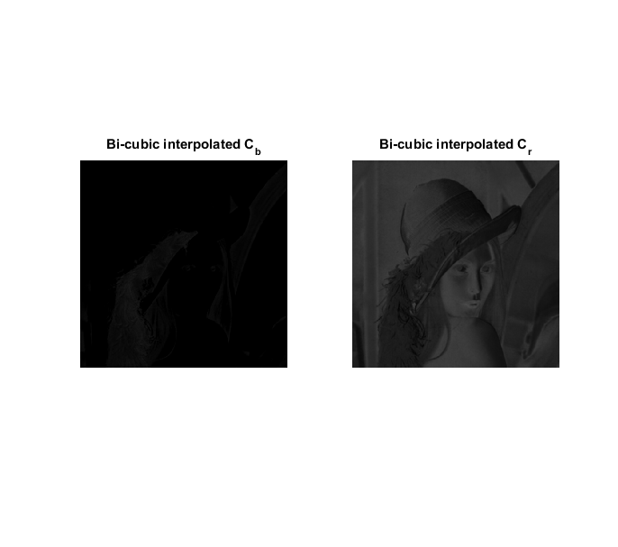
Use a super-resolution technique to upscale the luminance component
Y_sr = imresize(Y, factor, 'bicubic'); subplot(1, 1, 1); imshowpair(Y, Y_sr, 'montage'); title('Y before and after super-resolution');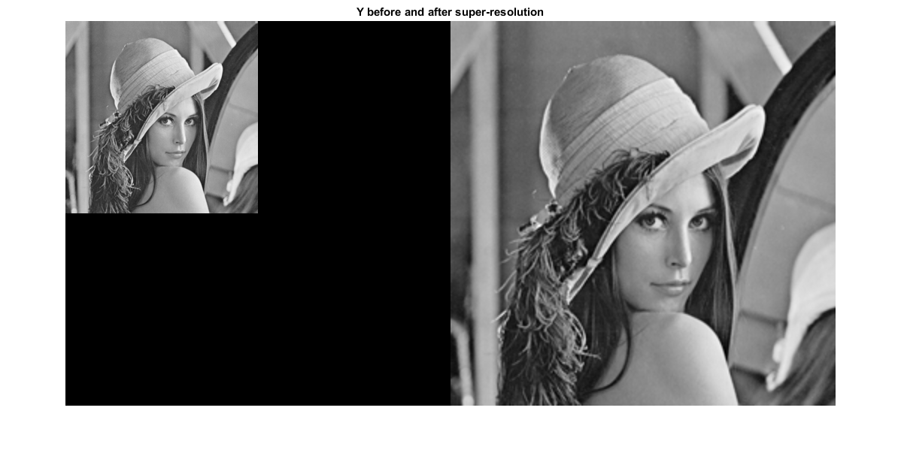
Filter the chromatic components using a guided filter with Y_sr as the guide
Y_o = Y_sr; C_bo = imguidedfilter(C_bbc, Y_sr, 'NeighborhoodSize', r, ... 'DegreeOfSmoothing', e); C_ro = imguidedfilter(C_rbc, Y_sr, 'NeighborhoodSize', r, ... 'DegreeOfSmoothing', e); subplot(2, 2, 1); imshow(C_bbc); title('C_b before guided filtering'); subplot(2, 2, 2); imshow(C_rbc); title('C_r before guided filtering'); subplot(2, 2, 3); imshow(C_bo); title('C_b after guided filtering'); subplot(2, 2, 4); imshow(C_ro); title('C_r after guided filtering');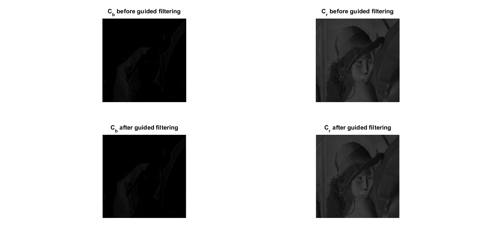
Convert the output from YCbCr to RGB color space
s = size(Y_o); A_o = zeros(s(1), s(2), 3); A_o(:, :, 1) = Y_o + 1.302 * C_ro; A_o(:, :, 2) = Y_o - 0.344 * C_bo - 0.712 * C_ro; A_o(:, :, 3) = Y_o + 1.772 * C_bo;
Visualization of Results
Display the downsampled input and super-resolutioned output images
subplot(1,1,1); imshowpair(A, A_o, 'montage')
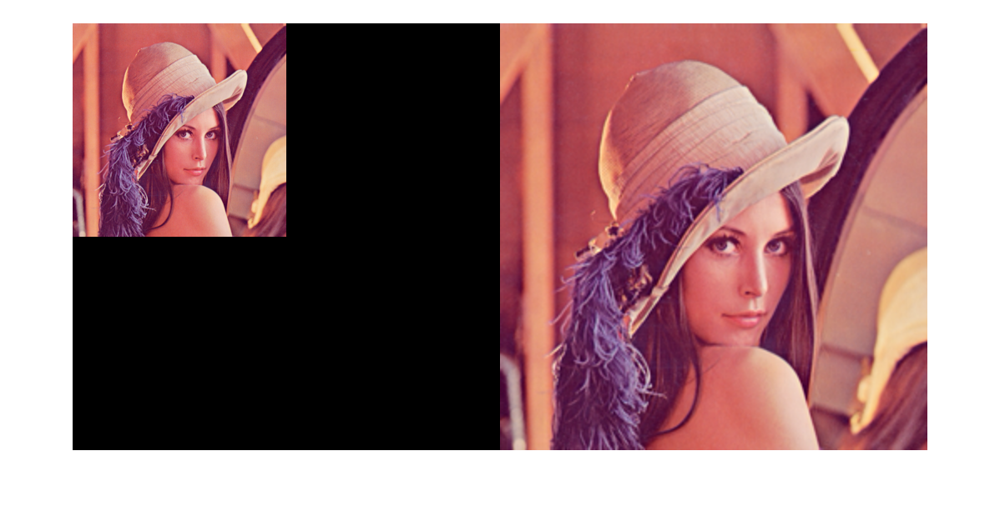 Analysis and Conclusions
The solution has been modified to allow for easier analysis by making it into a function which accepts the parameters as the input and PSQR and RMSE as the output and can be found in tuneSolution.m
To avoid unneeded complexity, only bi-cubic interpolation will be used as the super-resolution technique for the guided image
Effect of image on peak signal-to-noise ratio and root-mean-square error
images = {'lena_std.tif', 'beeflowr.ppm', 'blakeyed.ppm'};
n = length(images);
PSNRs = zeros(1, n);
PSNRIs = zeros(1, n); PSNRCbs = zeros(1, n); PSNRCrs = zeros(1, n);
RMSEIs = zeros(1, n); RMSECbs = zeros(1, n); RMSECrs = zeros(1, n);
for i=1:n
[PSNRs(i), PSNRIs(i), PSNRCrs(i), PSNRCbs(i), RMSEIs(i), RMSECbs(i),...
RMSECrs(i)] = tuneSolution(images{i}, 3, 2, 0.01);
end
subplot(2,2,1); bar(PSNRCbs); title('PSNR of C_b for each image');
ylabel('Peak signal-to-noise ratio'); set(gca,'xticklabel',images)
subplot(2,2,2); bar(PSNRCrs); title('PSNR of C_r for each image');
ylabel('Peak signal-to-noise ratio'); set(gca,'xticklabel',images)
subplot(2,2,3); bar(RMSECbs); title('RMSE of C_b for each image');
ylabel('Root-mean-square error'); set(gca,'xticklabel',images)
subplot(2,2,4); bar(RMSECrs); title('RMSE of C_r for each image');
ylabel('Root-mean-square error'); set(gca,'xticklabel',images)
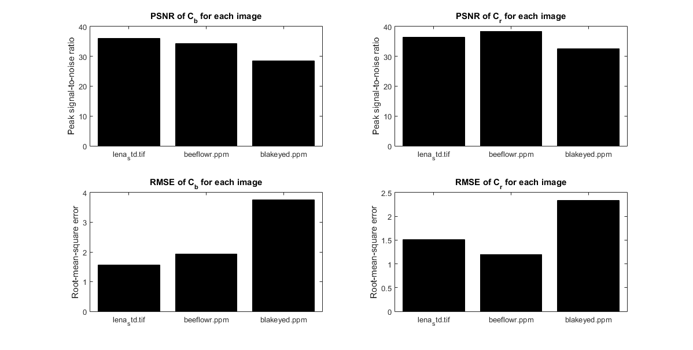 Varying the image does not seem to affect PSNR by much relative to the value of the respective PSNRs, but it seems to result in a greater relative effect on the RMSE.
Effect of factor on root-mean-square error
factors = 1:10; n = length(factors); PSNRs = zeros(1, n); PSNRIs = zeros(1, n); PSNRCbs = zeros(1, n); PSNRCrs = zeros(1, n); RMSEIs = zeros(1, n); RMSECbs = zeros(1, n); RMSECrs = zeros(1, n); for i=1:n [PSNRs(i), PSNRIs(i), PSNRCrs(i), PSNRCbs(i), RMSEIs(i), RMSECbs(i),... RMSECrs(i)] = tuneSolution('blakeyed.ppm', factors(i), 2, 0.01); end subplot(1,3,1); plot(factors,RMSEIs); title('RMSE of I vs factor'); xlabel('Magnification factor'); ylabel('Root-mean-square error'); subplot(1,3,2); plot(factors,RMSECbs); title('RMSE of output C_b vs factor'); xlabel('Magnification factor'); ylabel('Root-mean-square error'); subplot(1,3,3); plot(factors,RMSECrs); title('RMSE of output C_r vs factor'); xlabel('Magnification factor'); ylabel('Root-mean-square error');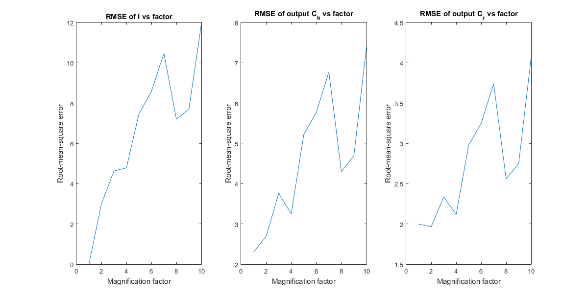
The increase of factor leads to the general increase of root-mean-square error, with the exception of powers of 2 which seem to be omitted by the author of the paper. By plotting only odd numbers we obtain the following.
factors = 1:2:25; n = length(factors); PSNRs = zeros(1, n); PSNRIs = zeros(1, n); PSNRCbs = zeros(1, n); PSNRCrs = zeros(1, n); RMSEIs = zeros(1, n); RMSECbs = zeros(1, n); RMSECrs = zeros(1, n); for i=1:n [PSNRs(i), PSNRIs(i), PSNRCrs(i), PSNRCbs(i), RMSEIs(i), RMSECbs(i),... RMSECrs(i)] = tuneSolution(images{2}, factors(i), 2, 0.01); end subplot(1,3,1); plot(factors,RMSEIs); title('RMSE of I vs factor'); xlabel('Magnification factor'); ylabel('Root-mean-square error'); subplot(1,3,2); plot(factors,RMSECbs); title('RMSE of output C_b vs factor'); xlabel('Magnification factor'); ylabel('Root-mean-square error'); subplot(1,3,3); plot(factors,RMSECrs); title('RMSE of output C_r vs factor'); xlabel('Magnification factor'); ylabel('Root-mean-square error');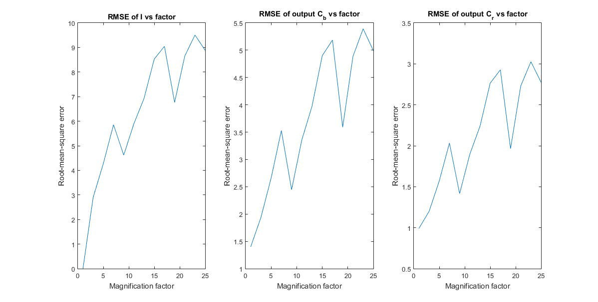
It appears to show a near linear increase in RMSE with an offset at certain values such as 9 and 19
Effect of the regularization parameter 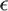
es = linspace(0.01,1,100); n = length(es); PSNRs = zeros(1, n); PSNRIs = zeros(1, n); PSNRCbs = zeros(1, n); PSNRCrs = zeros(1, n); RMSEIs = zeros(1, n); RMSECbs = zeros(1, n); RMSECrs = zeros(1, n); for i=1:n [PSNRs(i), PSNRIs(i), PSNRCrs(i), PSNRCbs(i), RMSEIs(i), RMSECbs(i),... RMSECrs(i)] = tuneSolution('blakeyed.ppm', 3, 2, es(i)); end subplot(1,2,1); plot(es,PSNRCbs); title('PSNR of output C_b vs \epsilon'); xlabel('Regularization parameter\epsilon'); ylabel('Peak signal-to-noise ratio'); subplot(1,2,2); plot(es,PSNRCrs); title('PSNR of output C_r vs \epsilon'); xlabel('Regularization parameter\epsilon'); ylabel('Peak signal-to-noise ratio');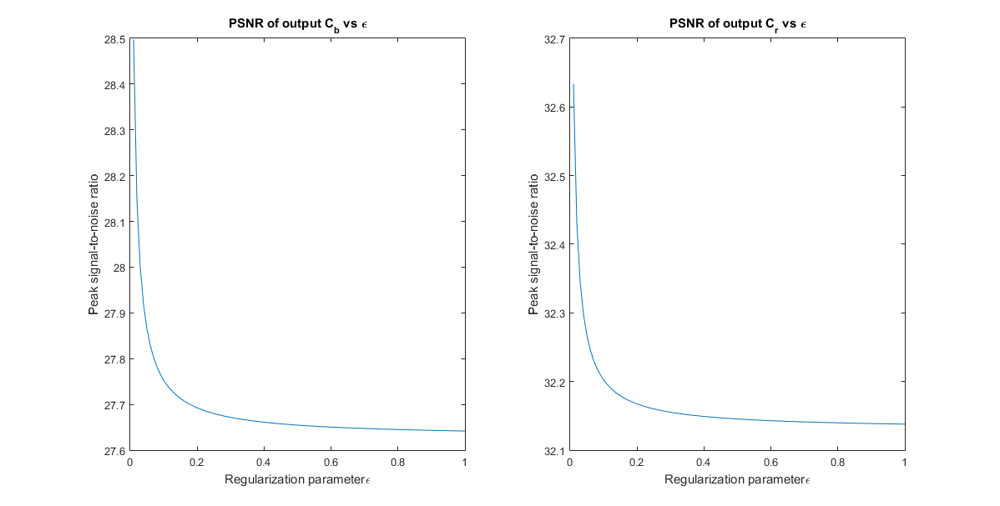
Like the paper, the magnification factor is fixed to 3, the window size is fixed to 3 and the image used is Blakeyed; the only deviation from the paper is guided image. Bi-cubic interpolation is used instead of the result of Zeyde et al. As seen in the plots above, the PSNR of the output Cb and Cr components decreases as regularization increases, which is similar to the results of the paper, but unlike the paper which shows a linear decrease, the plots above show a pattern more akin to the inverse function.
Effect of window size r
rs = 1:20; n = length(rs); PSNRs = zeros(1, n); PSNRIs = zeros(1, n); PSNRCbs = zeros(1, n); PSNRCrs = zeros(1, n); RMSEIs = zeros(1, n); RMSECbs = zeros(1, n); RMSECrs = zeros(1, n); for i=1:n [PSNRs(i), PSNRIs(i), PSNRCrs(i), PSNRCbs(i), RMSEIs(i), RMSECbs(i),... RMSECrs(i)] = tuneSolution('blakeyed.ppm', 3, rs(i), 0.5); end subplot(1,2,1); plot(rs,PSNRCbs); title('PSNR of output C_b vs r'); xlabel('Window size r'); ylabel('Peak signal-to-noise ratio'); subplot(1,2,2); plot(rs,PSNRCrs); title('PSNR of output C_r vs r'); xlabel('Window size r'); ylabel('Peak signal-to-noise ratio');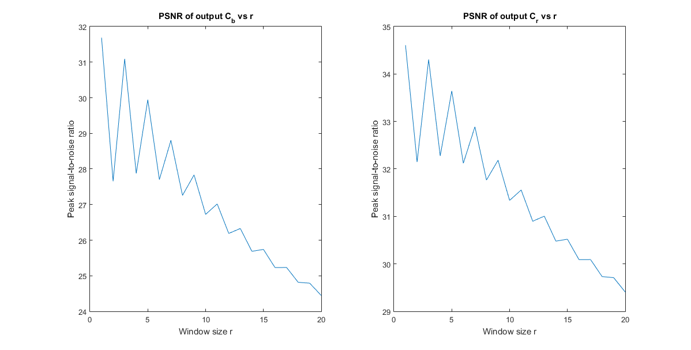
This measurement is set up similarly to the measurement of regularization, but instead regularization is fixed to 0.5 and window size is varied. Unlike the paper, both chromatic components decrease in PSNR as r increases. In the paper, PSNR of the Cb component increases in the shape of a log function and the PSNR of the Cr component decreases linearly. In the plot above both Cb and Cr decrease in a linear trend, but the result seems to alternate between two decreasing linear functions Below shows the same plot with odd and even window sizes separated. which results in near linear decrease for both.
rs = 1:2:19; n = length(rs); PSNRs = zeros(1, n); PSNRIs = zeros(1, n); PSNRCbs = zeros(1, n); PSNRCrs = zeros(1, n); RMSEIs = zeros(1, n); RMSECbs = zeros(1, n); RMSECrs = zeros(1, n); for i=1:n [PSNRs(i), PSNRIs(i), PSNRCrs(i), PSNRCbs(i), RMSEIs(i), RMSECbs(i),... RMSECrs(i)] = tuneSolution('blakeyed.ppm', 3, rs(i), 0.5); end subplot(2,2,1); plot(rs,PSNRCbs); title('PSNR of output C_b vs odd r'); xlabel('Window size r'); ylabel('Peak signal-to-noise ratio'); subplot(2,2,2); plot(rs,PSNRCrs); title('PSNR of output C_r vs odd r'); xlabel('Window size r'); ylabel('Peak signal-to-noise ratio'); rs = 2:2:20; for i=1:n [PSNRs(i), PSNRIs(i), PSNRCrs(i), PSNRCbs(i), RMSEIs(i), RMSECbs(i),... RMSECrs(i)] = tuneSolution('blakeyed.ppm', 3, rs(i), 0.5); end subplot(2,2,3); plot(rs,PSNRCbs); title('PSNR of output C_b vs even r'); xlabel('Window size r'); ylabel('Peak signal-to-noise ratio'); subplot(2,2,4); plot(rs,PSNRCrs); title('PSNR of output C_r vs even r'); xlabel('Window size r'); ylabel('Peak signal-to-noise ratio');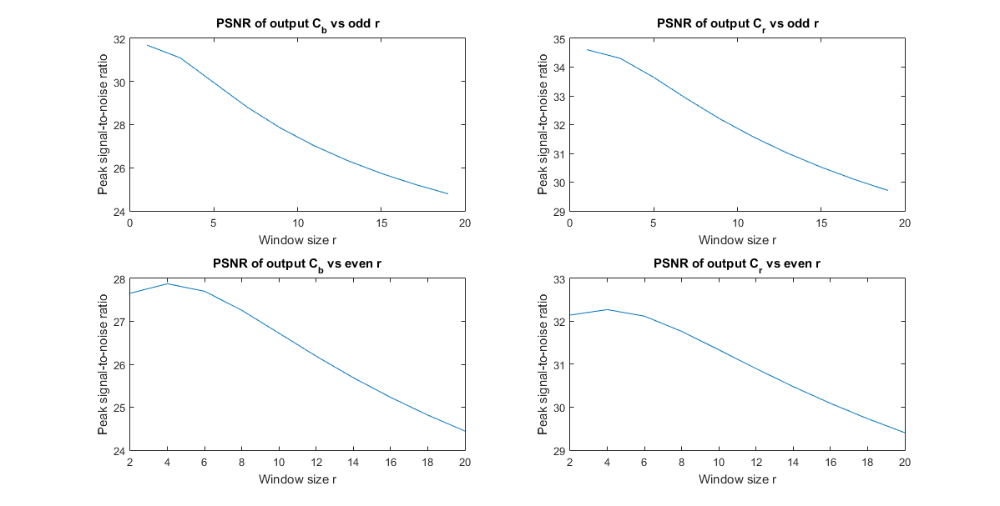
Overall the solution seemed to behave as intended by the paper author, but there seems to be a dependence on the super-resolution technique used on the luminance component as the results obtained seem to diverge from the paper in certain situations, such as the PSNR of the Cb component when r varies. It would also help if the author explicitly defined the parameter r and provided direct links to the test images used to reduce guess-work and hurdles in reproducing the results.